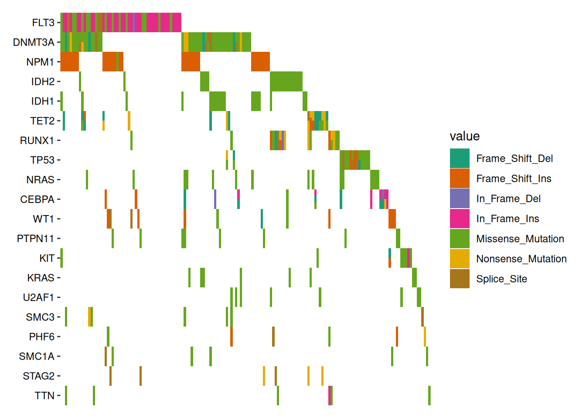
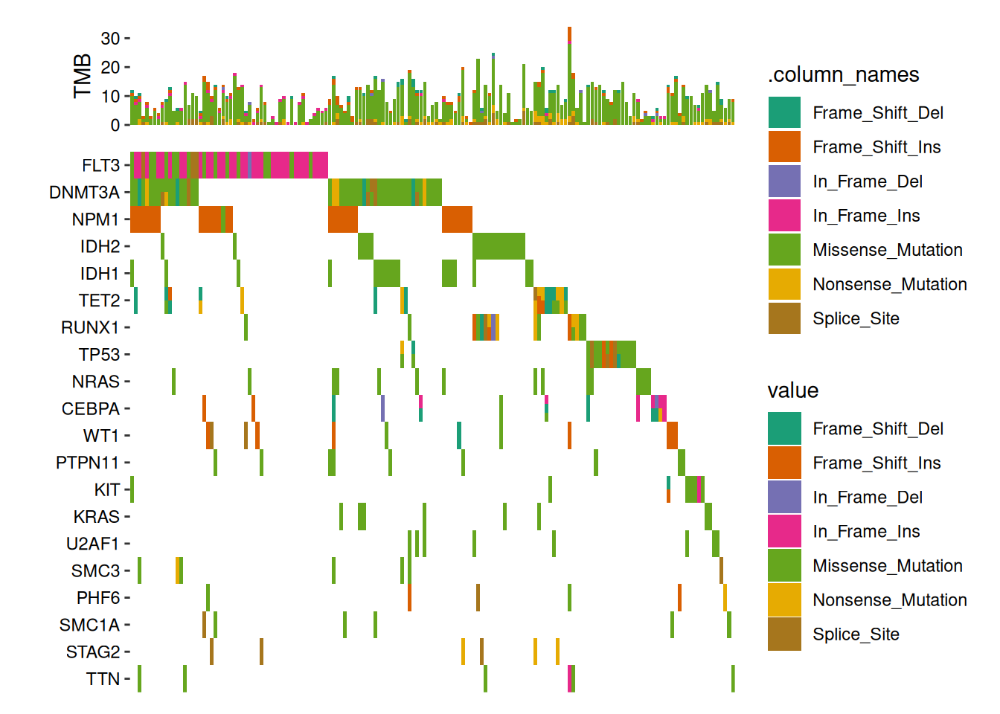

16 ggoncoplot
The ggoncoplot() function generates oncoPrint visualizations that display genetic alterations in a matrix format. This function is especially useful for visualizing complex genomic data, such as mutations, copy number variations, and other genomic alterations in cancer research.
16.1 Input Data
The input should be a character matrix which encodes the alterations, you can use string of ";", ":", ",", and "|" to separate multiple alterations. Internally, ggoncoplot() will use fortify_matrix() to get such matrix.
mat <- read.table(
textConnection(
"s1,s2,s3
g1,snv;indel,snv,indel
g2,,snv;indel,snv
g3,snv,,indel;snv"
),
row.names = 1, header = TRUE, sep = ",", stringsAsFactors = FALSE
)
mat
#> s1 s2 s3
#> g1 snv;indel snv indel
#> g2 snv;indel snv
#> g3 snv indel;snvA basic oncoprint can be generated as follows:
ggoncoplot(mat)
16.2 OncoPrint Customization
By default, all alterations are represented with tiles of equal width and height, which may lead to overlapping. You can control the width and height of the tiles using the map_width and map_height arguments (we will introduce another more effective ways to handle this in the Specialized Geoms section):
ggoncoplot(mat, map_width = c(snv = 0.5), map_height = c(indel = 0.9))
By default, all empty string will be converted to NA value and ggplot2 will translate the NA values and render it in the legend. To prevent this, you can turn off the translation using na.translate = FALSE:
ggoncoplot(mat, map_width = c(snv = 0.5), map_height = c(indel = 0.9)) +
scale_fill_brewer(palette = "Dark2", na.translate = FALSE)
The function automatically reorders rows and columns based on alteration frequency. Disable this with reorder_row = FALSE and reorder_column = FALSE.
You can further customize layouts using methods from ?sec-layout-customize.
ggoncoplot(mat,
map_width = c(snv = 0.5), map_height = c(indel = 0.9),
reorder_row = FALSE, reorder_column = FALSE
) +
scale_fill_brewer(palette = "Dark2", na.translate = FALSE)
16.3 Advanced Data Handling
ggoncoplot() is built on ggheatmap() with a default scheme_data() (see Chapter 14 for details), which splits alterations into separate entries for visualization. (See ggplot2 specification section in ggheatmap() for the input data of scheme_data()):
pdata <- function(data) {
tidyr::separate_longer_delim(data,
cols = value,
delim = stringr::regex("\\s*[;:,|]\\s*")
)
}
# Note: this figure will contain an empty string value.
#
# `ggoncoplot()` will automatically convert any empty strings to `NA`
# before pass it to `ggheatmap`.
ggheatmap(mat) -
scheme_data(pdata) +
scale_fill_brewer(palette = "Dark2", na.translate = FALSE)
#> → heatmap built with `geom_tile()`
By default, the scheme_data() is inherited from the parent layout if the data of the plot is inherited from the layout. You can apply the parent scheme_data() first and then apply another transformation by setting inherit = TRUE. This functionality is especially useful when working with ggoncoplot().
ggoncoplot(mat, map_width = c(snv = 0.5), map_height = c(indel = 0.9)) +
anno_top(size = 0.2) +
ggalign() +
# by setting `inherti = TRUE`, we apply the parent layout `scheme_data()`
# (from the `ggoncoplot()` layout) firstly, which will split the alteration
# string and unnested the columns.
# Here: We then remove `NA` value
scheme_data(~ subset(.x, !is.na(value)), inherit = TRUE) +
geom_bar(aes(.x, after_stat(count), fill = value)) +
# note: `ggoncoplot()` use `geom_tile()` to draw the oncoPrint,
# the guide is different from `geom_bar()`, though both looks
# like the same, we remove the guide of `geom_bar()` plot
guides(fill = "none") &
scale_fill_brewer(palette = "Dark2", na.translate = FALSE)
16.4 Integration with maftools
The ggoncoplot() function supports MAF objects from the maftools package using the fortify_matrix.MAF() method. It includes options to control data generation for ggoncoplot(), such as drawing the top n_top genes.
# load data from `maftools`
laml.maf <- system.file("extdata", "tcga_laml.maf.gz", package = "maftools")
# clinical information containing survival information and histology. This is optional
laml.clin <- system.file("extdata", "tcga_laml_annot.tsv", package = "maftools")
laml <- maftools::read.maf(
maf = laml.maf,
clinicalData = laml.clin,
verbose = FALSE
)
# Visualizing the Top 20 Genes
ggoncoplot(laml, n_top = 20) +
scale_fill_brewer(palette = "Dark2", na.translate = FALSE) +
theme_no_axes("x")
By default, samples without alterations in the selected genes are removed. To include all samples, set remove_empty_samples = FALSE:
align_plots(
ggoncoplot(laml, n_top = 20L, remove_empty_samples = FALSE) +
scale_fill_brewer(palette = "Dark2", na.translate = FALSE) +
theme_no_axes("x") +
ggtitle("Keep empty samples"),
ggoncoplot(laml, n_top = 20L, remove_empty_samples = TRUE) +
scale_fill_brewer(palette = "Dark2", na.translate = FALSE) +
theme_no_axes("x") +
ggtitle("Remove empty samples"),
ncol = 1L,
guides = "tlbr"
)16.5 Specialized Geoms
16.5.1 geom_subtile()
When multiple alterations occur in the same sample and gene, they are combined into a single value, "Multi_Hit", by default. To visualize these alterations separately, you can set collapse_vars = FALSE. However, doing so can lead to overlapping alterations within the same cell, making the visualization cluttered and hard to interpret.
In such cases, disabling the default filling and defining a custom heatmap layer with geom_subtile() is more effective. This function subdivides each cell into smaller rectangles, allowing the distinct alterations to be clearly displayed.
ggoncoplot(laml, n_top = 20, collapse_vars = FALSE, filling = FALSE) +
geom_subtile(aes(fill = value), ncol = 1L) +
scale_fill_brewer(palette = "Dark2", na.translate = FALSE) +
theme_no_axes("x")
#> `geom_subtile()` subdivide tile into a maximal of 3 rectangles
We focus exclusively on cells with multiple alterations to highlight the differences, by filtering the data before applying geom_subtile():
ggoncoplot(laml, n_top = 20, collapse_vars = FALSE, filling = FALSE) +
scheme_data(function(data) {
dplyr::filter(data, dplyr::n() > 1L, .by = c(".x", ".y"))
# we apply the parent layout `scheme_data()` first (`inherit = TRUE`),
# which will split the alteration string and unnested the columns.
}, inherit = TRUE) +
geom_subtile(aes(fill = value), ncol = 1L) +
scale_fill_brewer(palette = "Dark2", na.translate = FALSE) +
theme_no_axes("x")
#> `geom_subtile()` subdivide tile into a maximal of 3 rectangles
16.5.2 geom_gshape()
geom_subtile() often suffices for most scenarios. However, if you require a strategy similar to that of ComplexHeatmap, consider using geom_gshape(), which offers greater flexibility for complex customizations.
Key Features of geom_gshape():
- Custom Drawing Logic: Accepts a
gshapeaesthetic, allowing each cell to be rendered as a specific graphical object (grob). - Flexible Aesthetic Mapping: You must provide the manual scaling
scale_gshape_manual()to mapgshapevalues to corresponding drawing functions. Functions mapped throughscale_gshape_manual()can utilize any number of ggplot2 aesthetics and output custom graphical objects (grob).
The function provided in values argument of scale_gshape_manual() operates similarly to alter_fun in ComplexHeatmap. Currently, geom_subtile() performs well enough for most cases, making geom_gshape() somewhat cumbersome to use. Managing alteration types, especially in the case of overlapping alterations, requires meticulous design to ensure that the visual elements do not interfere with each other.
16.6 Data Attributes
Except for the data used for the main plot, fortify_matrix.MAF() also attaches several useful attributes.
-
gene_summary: A data frame of gene summary informations. Seemaftools::getGeneSummary()for details. -
sample_summary: A data frame of sample summary informations. Seemaftools::getSampleSummary()for details. -
sample_anno: A data frame of sample clinical informations. Seemaftools::getClinicalData()for details. -
variant_weights: A data frame of variant weights. Each gene in a sample is assigned a total weight of1. When multiple variants occur in the same gene-sample pair, the weight for each variant reflects its proportion of the total. -
n_genes: Total number of genes. -
n_samples: Total number of samples. -
titv: A list of data frame with Transitions and Transversions summary. Seemaftools::titv()for details.
You can extract these attributes using the ggalign_attr() function. Below is an example of how to extract the sample summary data (e.g., TMB) using ggalign_attr() and add it to the top annotation of an oncoplot:
ggoncoplot(laml, n_top = 20, collapse_vars = FALSE, filling = FALSE) +
geom_subtile(aes(fill = value), ncol = 1) +
theme_no_axes("x") +
anno_top(size = 0.2) +
ggalign(data = function(data) {
data <- ggalign_attr(data, "sample_summary")
# matrix input will be automatically melted into a long foramted data
# frame in `ggalign()` function.
as.matrix(data[2:(ncol(data) - 1L)])
}) +
geom_bar(aes(.x, value, fill = .column_names),
stat = "identity"
) +
ylab("TMB") &
scale_fill_brewer(palette = "Dark2", na.translate = FALSE)
#> `geom_subtile()` subdivide tile into a maximal of 3 rectangles
We can draw the example from maftools vignette.
ggoncoplot(laml, n_top = 20, collapse_vars = FALSE, filling = FALSE) +
geom_subtile(aes(fill = value), ncol = 1) +
theme_no_axes("x") +
# since legends from geom_tile (oncoPrint body) and `geom_bar`
# is different, though both looks like the same, the internal
# won't merge the legends. we remove the legends of oncoPrint body
guides(fill = "none") +
# add top annotation
anno_top(size = 0.2) +
ggalign(data = function(data) {
data <- ggalign_attr(data, "sample_summary")
# matrix input will be automatically melted into a long foramted data
# frame in `ggalign()` function.
as.matrix(data[2:(ncol(data) - 1L)])
}) +
geom_bar(aes(.x, value, fill = .column_names),
stat = "identity"
) +
ylab("TMB") +
# add right annotation
anno_right(size = 0.2) -
# remove bottom spaces of the right annotation when aligning
scheme_align(free_spaces = "b") +
# add the text percent for the alterated samples in the right annotation
ggalign(data = function(data) {
# Atomic vector will be put in the `value` column of the data frame.
ggalign_attr(data, "gene_summary")$AlteredSamples /
ggalign_attr(data, "n_samples")
}) +
geom_text(aes(1, label = scales::label_percent()(value)), hjust = 1) +
scale_x_continuous(
expand = expansion(),
name = NULL, breaks = NULL,
limits = c(0, 1)
) +
theme(plot.margin = margin()) +
# add the bar plot in the right annotation
ggalign(data = function(data) {
data <- ggalign_attr(data, "gene_summary")
# matrix input will be automatically melted into a long foramted data
# frame in `ggalign()` function.
as.matrix(data[2:8])
}) +
geom_bar(aes(value, fill = .column_names),
stat = "identity",
orientation = "y"
) +
xlab("No. of samples") -
# we apply the scale mapping to the top and right annotation: `position = "tr"`
# and the main plot: `position = "i"`
quad_scope(
scale_fill_brewer("Mutations",
palette = "Dark2", na.translate = FALSE
),
position = "tri"
) +
# add bottom annotation
anno_bottom(size = 0.2) +
# add bar plot in the bottom annotation
ggalign(data = function(data) {
data <- ggalign_attr(data, "titv")$fraction.contribution
# matrix input will be automatically melted into a long foramted data
# frame in `ggalign()` function.
as.matrix(data[2:7])
}) +
geom_bar(aes(y = value, fill = .column_names), stat = "identity") +
ylab("Ti/Tv") +
scale_fill_brewer("Ti/Tv", palette = "Set2")
#> `geom_subtile()` subdivide tile into a maximal of 3 rectangles
#> Warning: Removed 24 rows containing missing values or values outside the scale range
#> (`geom_bar()`).
16.7 Integration with GISTIC Results from maftools
The package also includes a fortify_matrix.GISTIC() method designed to handle GISTIC objects from the maftools package. This allows you to seamlessly apply the same operations to visualize GISTIC results. The following ggalign attributes are generated as part of the analysis:
-
sample_anno: sample clinical informations provided insample_annoargument. -
sample_summary: sample copy number summary informations. Seedata@cnv.summaryfor details. -
cytoband_summary: cytoband summary informations. Seedata@cytoband.summaryfor details. -
gene_summary: gene summary informations. Seedata@gene.summaryfor details. -
summary: A data frame of summary information. Seedata@summaryfor details.
# Ensure the maftools package is installed and load the example GISTIC data
all.lesions <- system.file("extdata", "all_lesions.conf_99.txt", package = "maftools")
amp.genes <- system.file("extdata", "amp_genes.conf_99.txt", package = "maftools")
del.genes <- system.file("extdata", "del_genes.conf_99.txt", package = "maftools")
scores.gistic <- system.file("extdata", "scores.gistic", package = "maftools")
laml.gistic <- maftools::readGistic(
gisticAllLesionsFile = all.lesions, gisticAmpGenesFile = amp.genes,
gisticDelGenesFile = del.genes, gisticScoresFile = scores.gistic
)
#> -Processing Gistic files..
#> --Processing amp_genes.conf_99.txt
#> --Processing del_genes.conf_99.txt
#> --Processing scores.gistic
#> --Summarizing by samples
ggoncoplot(laml.gistic) +
scale_fill_brewer("CNV", palette = "Dark2", na.translate = FALSE) +
theme_no_axes("x")